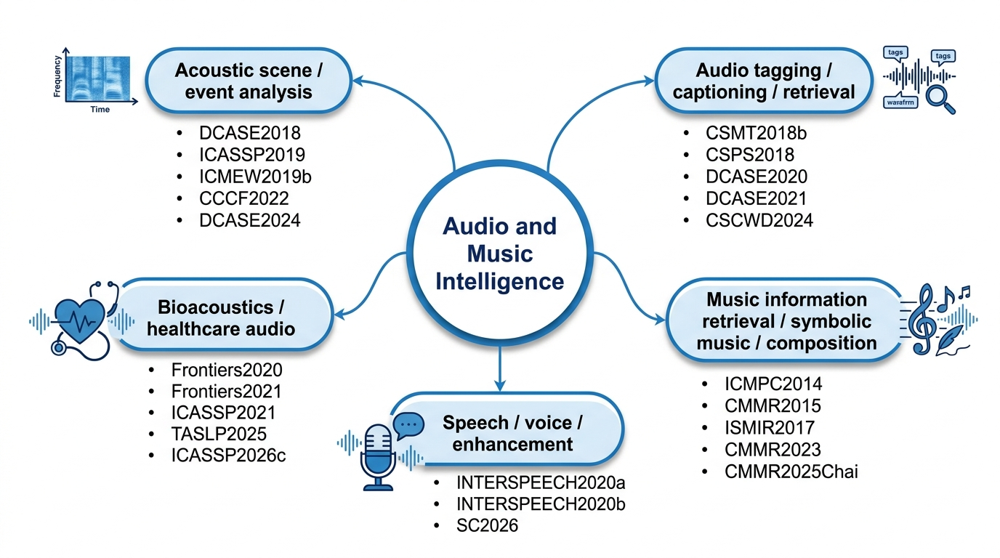

Audio and Music Intelligence
This field represents the main research foundation. The work develops computational methods for understanding, modelling, generating, and analysing sound and music. It covers acoustic event detection, audio tagging, acoustic scene classification, audio captioning, audio-language understanding, symbolic music analysis, music generation, expressive timing, healthcare audio, heart sound analysis, speech enhancement, and singing or opera voice modelling.
The motivation is to enable machines to perceive and reason about sound in ways that are useful for real-world environments, creative music systems, healthcare applications, and human-centred intelligent systems. The field has achieved a broad and coherent research programme: from modelling musical expression and symbolic music structure, to building machine listening systems, to connecting audio with language and multimodal reasoning, and finally to applying audio intelligence in healthcare and speech-related tasks.